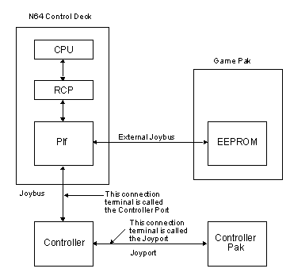
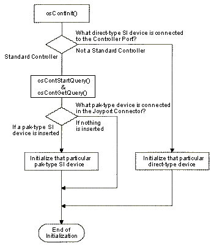
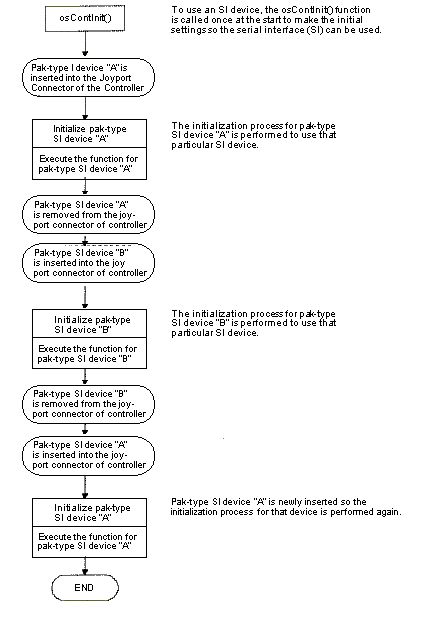
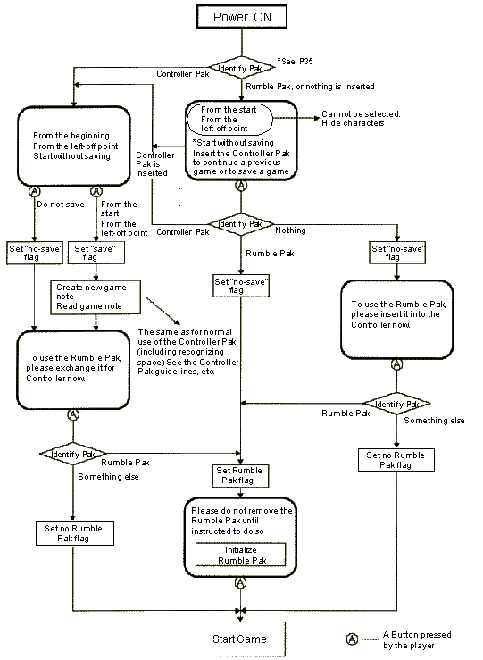
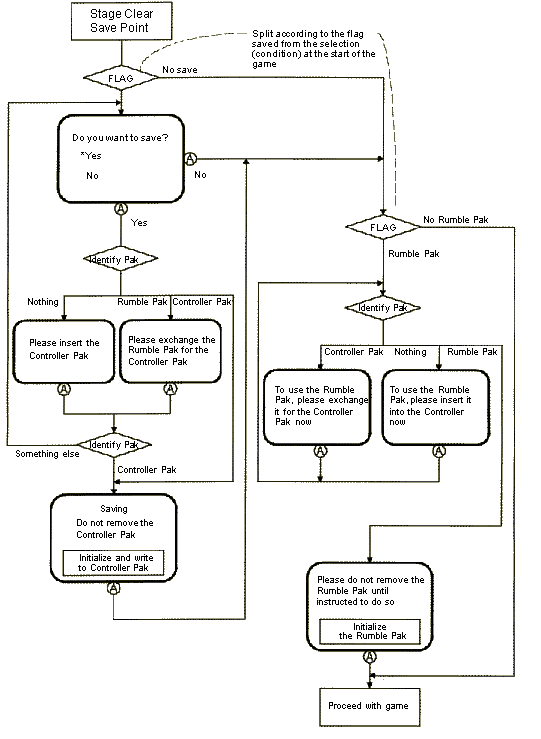
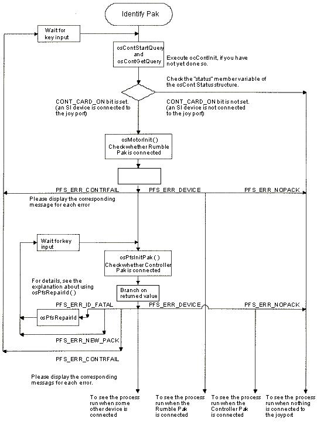

|
|
Introduction to N64 SI Devices
Introduction
What is an SI Device?
The joybus is a signal line that directly connects the SI device to the *PIf. Examples of SI devices that connect via the joybus are the Standard Controller and the Voice Recognition System. These devices are used by inserting them into the controller port on the front face of the N64 Control Deck. The ports are designated starting from the left as **Port 0, Port 1, Port 2 and Port 3.
The external joybus is the name for the joybus signal line exiting from the game pak. An example of an SI device connected via this line is the EEPROM inside the game pak.
The joyport is the signal line located inside the Controller at the insertion site for other SI devices, such as the Controller Pak and the Rumble Pak. These SI devices are attached using the joyport connector which is located on the back of the Controller.
* PIf is the name of the IC chip which plays an intermediary role when the CPU accesses an SI device.
** Controllers inserted into ports 0,1,2,3 are designated as Controllers 1,2,3,4.
Types of SI Devices
Note: The N64 mouse is not currently available from Nintendo, but is scheduled to be developed in the near future. The N64 mouse will connect to the N64 Controller port.
Direct-Type SI Devices
Pak-Type SI Devices
SI Device Commands
Each of these activities is explained in detail below.
SI Device Initialization
The first thing which must be done in order to use an SI device, is to make the initial settings. This process is performed with the osContInit() function. When this function is called, the system checks the connection status of the SI device. If the Plf is busy, the timer waits until it is available for use by the SI device. This is done because, immediately after starting the N64 the PIf is used to communicate with the game pak, and therefore, cannot be used by the SI device until that process ends.
Be sure to execute the osContInit() function to access the SI device. This function need only be called once after starting, or resetting the program. Calling this function a second time will have no effect.
After the initial settings are made to use an SI device, you must perform the steps necessary to initialize the device. This process does the following things:
These steps are performed by calling and executing the initialization function for each SI device. Please check the value returned by the function on the application side and confirm that initialization was successful.
Note: Some SI devices do not have their own initialization process. When this is the case, the initial settings common to all SI devices are sufficient. As of December 1998, the only SI devices which do not need their own initialization process are the Standard Controller and the mouse.
The following flow chart shows the initialization procedure for each SI device.
Figure 26.1.1 Initialization Procedure for SI Devices
Please note the following precautions:
If you initialize and use a pak-type SI device such as the Rumble Pak, and then substitute it for another kind of device, such as a Controller Pak, then you need to initialize this second SI device before it is used. Also, if you remove the second device (the Controller Pak) then insert the first device (the Rumble Pak), you need to initialize the Rumble Pak again using its own initialization process. You also need to do this when SI devices are switched among the four Controllers.
Below is an example of the flow when switching between pak-type SI devices.
Figure 26.1.2 Switching and Using Pak-Type Devices
Executing Various Actions
Obtaining the Status
SI Device Library Functions
The first three groups pertain to the explanation of commands in described above. Old-version functions refer to functions that are no longer in use.
The osContInit() function should be called before you call the initialization function for a particular SI device. You should execute both the osContInit() function and the SI device's own initialization function before executing any of the other functions.
SI Device Functions
Initialization Function
Various Action Functions
Get Status Functions
Various Action Functions
Initialization Function
Various Action Functions
Get Status Function
Old Version Functions
Initialization Function
Various Action Functions
Initialization Function
Various Action Functions
Initialization Functions
Various Action Functions
Get Status Function
Initialization Functions
Various Action Functions
For example, for the osContInit(), osContGetQuery() and osContReset() functions, errors are returned in the "errno" member variable of the OSContStatus structure, while for the osContGetReadData() function, errors are returned in the "errno" member variable of the OSContPad structure.
There are five major types of errors:
A "no SI device is inserted" error occurs when nothing is inserted in the specified controller port or joyport connector.
A "different SI device is inserted" error occurs when some device other than the expected SI device is inserted in the specified controller port or joyport connector.
A "data transfer failure" error occurs when data is not transferred successfully between the SI device and the N64. The problem can in the connection or in the hardware itself.
An "error specific to an SI device" is an error that only occurs in that particular SI device.
A "fatal error" can occur due to errors in the program, problems with the use of the hardware, or a problem with the hardware itself.
Below is a list of errors that can arise for each SI device.
Standard Controller Errors
No SI Device inserted
Data transfer failure
No SI device inserted
Different SI device inserted
Data transfer failure
Errors specific to this particular SI device
Fatal error
No SI device inserted
Different SI Device is inserted
Data transfer failure
No SI device is inserted
Fatal error
This error is not defined by #define.
No SI device inserted
Different SI Device is inserted
Data transfer failure
Errors specific to this particular SI device
No SI device inserted
Different SI Device is inserted
Data transfer failure
Errors specific to this particular SI device
Fatal error
Syntax
This chapter explains the following basic topics related to SI devices.
An SI device is the name for any type of peripheral device that is connected to the joybus, external joybus or joyport, and accessed by the PIf via the serial interface (SI).

There are two types of SI devices. A "direct-type" SI device connects to the joybus or the external joybus and communicates directly with the PIf. A "pak-type" SI device is used via a connection to the Controller's joyport. Below is a list of the SI devices currently available from Nintendo.
The Standard Controller is the controller normally used with N64. This device is used by connecting it to the Controller Port on the front side of the N64 Control Deck.
EEPROM is attached to the board inside the Game Pak and is used to save data during game play.
The Voice Recognition System is a peripheral device which can recognize words spoken by the game player during an N64 game. To use this device, connect the plug of the voice recognition unit into a Controller Port, then connect the dedicated microphone into the unit.
An N64 mouse is scheduled to be developed in the near future. Please see Section 26.5, "N64 Mouse," for details.
The Controller Pak is a supplemental memory device that is connected to the Controller's joyport connector. By connecting a Controller Pak to the Controller, the player can save their progress in a game and record their high scores.
The Rumble Pak is a peripheral device which when connected to the Controller's joyport connector, will vibrate and create tactile sensations for the player during a game.
The N64 Game Boy Pak is a peripheral device that enables data from a Game Boy Game Pak to be loaded into the N64. To use the N64 Game Boy Pak, connect the device to the Controller's joyport connector, then insert a Game Boy Game Pak into the device.
A variety of commands can be executed for SI devices by calling library functions. Some library functions are common to all SI devices, while others are unique to a specific SI device. SI device commands can be broadly classified into the following three types of activities:
SI device initialization entails both making the initial settings in order to use the serial interface, and initializing the SI device itself.

Please note the following exception:

Various actions can be executed with SI devices. For example, you can obtain data with the control stick and buttons on the Standard Controller, transfer data with the Controller Pak and the N64 Game Boy Pak, and start voice recognition processes and get results with the Voice Recognition System.
Check to see what types of SI devices are connected to the Controller ports and joyports, and get the current status of an SI device.
Below are the library functions for each SI device. The functions have been grouped into four categories:
Initializes the SI device
Sends the query command to the Controller to obtain the Controller's status and type
Returns the Controller's status and type
Standard Controller Functions
Issues a read data command to obtain game Controller input settings
Returns 3D Stick data and button settings to the pad
Controller Pak Functions
Initializes the Controller Pak's file handle. You should call this function when dealing with the Controller Pak for the first time or when the Controller Pak is initially inserted
Creates a new game note
Deletes a game note
Reads and writes game note game data
Repairs the Controller Pak file system
Inspects and repairs the Controller Pak's file system
Reads the label of a Controller Pak
Obtains game note information
Searches the specified game note
Obtains the available number of bytes in a Controller Pak
Acquires the maximum note number and the number of notes used
Initializes the Controller Pak's file handle
This function was removed from the N64 operating system. It is no longer supported. In previous versions, you could use it to
change the capacity reserved for game notes; however, this
frequently confused the game user, so this function was removed.
Rumble Pak Functions
EEPROM Functions
Writes multiple blocks of data to EEPROM
Issues a read EEPROM command to obtain 8 bytes of data from the specified address
Writes multiple blocks of data to EEPROM
Reads multiple blocks of data from EEPROM
N64 Game Boy Pak Functions
Initializes the hardware and the structures for controlling the N64 Game Boy Pak.
Checks the registration area in the Game Boy game pak ROM
Detects poor contact by the Game Boy game pak connector.
Turns power ON/OFF to the Game Boy game pak inserted in the N64 Game Boy Pak.
Reads and writes to the Game Boy game pak memory
Voice Recognition System Functions
Initializes the Voice Recognition System control structure and hardware
Initializes the Voice Recognition System word registration dictionary
Registers words into the Voice Recognition System dictionary
Switches between recognizing words registered in the dictionary and eliminating words from recognition
Starts voice recognition by the Voice Recognition System
Gets voice recognition results from the Voice Recognition System
Forcibly stops voice recognition processing by the Voice Recognition System
Adjusts the input gain of the Voice Recognition System
Checks whether or not a word can be registered in the dictionary.
Counts the number of semisyllables in a word
Errors Related to the Use of SI Devices
When using ]SI device functions, errors can arise if the SI device is handled improperly or the program is put together poorly. The error values are always returned as the return value of the function, with the exception of when a function acts on a number of direct-type SI devices. In that case, errors are returned as member variables of the structures that return values read from the various SI devices.
There is no response from the Controller. The Controller is not inserted.
This bit is set when the Controller attempts to send the data faster than the hardware can handle. When this happens, disregard the data.
Controller Pak Errors
Nothing is inserted in the specified controller.
Something other than a Controller Pak is inserted into the Controller.
Data transfer to or from the Controller has. Either the Controller is not connected properly, or the Controller Pak or Controller Socket is damaged.
A different Controller Pak has been inserted.
There is a problem in the file system's management area.
Although the creation of a new game note was attempted, one could not be created because there was not enough space in the Controller Pak.
Although the creation of a new game note was
attempted, it could be done because the maximum (16) number of
game notes have been stored in the Controller Pak.
Although the creation of a new game note was attempted, it could not be done because the same game note already exists in the Controller Pak.
This is returned when the function (osPfsReadWriteFile) attempts to read data even though the data has not yet been written. If data is written, the PFS_WRITE bit is set to indicate the status of the file information area. When data is read, this bit is checked; if it is not set, this error is returned.
Although initialization of the file system has been attempted, the ID area was destroyed. The Controller Pak is not connected, it is damaged, or a peripheral device without
SRAM is inserted.
An incorrect argument was specified when this function was called, the specified game note does not exist.
Rumble Pak Errors
Some type of PIF error has occurred. Either the Rumble Pak is not inserted into the specified Controller or the Controller is not properly connected.
Some device other than the Rumble Pak is inserted in the Controller.
Data transfer to or from the Controller has failed.
EEPROM Errors
There is no EEPROM, or the interface circuit does not respond.
A -1 is returned if the address is a value which is not within the proper range.
N64 Game Boy Pak Errors
Nothing is inserted in the specified controller.
Some device other than the N64 Game Boy Pak is inserted in the controller.
Data transfers with the controller have failed. The controller may not be connected correctly, or there may be some problem with the N64 Game Boy Pak or the controller connector.
No Game Boy game pak is inserted in the N64 Game Boy Pak.
A Game Boy game pak has been inserted and removed.
Voice Recognition System Errors
Nothing is connected to the controller port.
Something other than the Voice Recognition System is connected to the controller port.
There was a data transmission failure. There is a problem in the Voice Recognition System connection.
A word containing improper characters has been registered. The set word is invalidated and the word number is not incremented.
Dictionary memory overflow. However, if the recognition command is executed in this condition, normal recognition processing can be performed even if the number of words which have been set is less than the number of words set by the osVoiceClearDictionary() function.
Either no voice has been input, or results cannot be acquired for some reason, such as that processing is still underway, etc.
There is an error in the function call method or in the argument.
There was no response from the Voice Recognition System. There may be a problem with the hardware.
SI Device Function Specifications
The following library functions are commonly used for all SI devices. Each function is explained in detail, below.
Initialize the settings to use the SI device
Start reading the status and type of SI device
Get status and type of SI device
Reset the SI device
Set the number of direct-type SI devices to be accessed
Initial Setting for SI Device Use
#include <ultra64.h>
s32 osContInit(OSMesgQueue *mq, u8 *bitpattern, OSContStatus *status);
Description
This function initializes the game Controller. It initializes the internal variables to be used for the Controller and returns the bit pattern of the connected Controller to the location pointed to by the bitpattern argument. This function also checks and returns the status of the connected Controller and the Controller Pak to the location pointed to by the status argument.
Before a Controller, Controller Pak, or EEPROM can be used, this function must be called. However, it is meaningless to call this function more than once. This function does nothing if it is called again, after the first call. Therefore, you cannot check the Controller's status.
If you want to check the status of the Controller or the Controller Pak after the first call, use the osContStartQuery and osContGetQuery functions.
The area specified by the status argument must be large enough to store the number of OSContstatus structures specified by MAXCONTROLLERS. The message queue (pointed to by the mg argument) must be the initialized message queue, linked to OS_EVENT_SI. To learn how to make the link, please refer to the osSetEventMesg function in the N64 Online Function Reference Manual..
When the osContInit blocks on the message queue, do not share the queue. 0 is returned if the call is successful, otherwise -1 is returned. Following is the definition for the structure:
typedef struct {
u16type; /*Controller type*/
u8status; /*Controller Pak status*/
u8errno; /*Error from SI device
}OSContStatus;
The message queue, mq, is the initialized message queue linked to OS_EVENT_SI. See the osSetEventMesg function to learn how to create this link.
If the initial setting was successful, a 0 is returned. If data transfer fails when an SI device is in use, a -1 is returned.
The bit is set to 1 for status--->type according to the type of device that is inserted into the Controller port. A 0 is returned when nothing is inserted into the port.
CONT_ABSOLUTE
This bit is set to 1 when a Standard Controller is connected to the N64 Control Deck. The connected device is judged to be a Controller if the device has a built-in absolute value counter for counting the amount of movement of the control stick as an absolute value from the origin. As of December 1998, this bit is only set when the Controller is attached.
CONT_RELATIVE
This bit is set to 1 when the mouse is attached. The connected device is judged to be a mouse if the device has a built-in relative counter for counting the amount of movement of the mouse from the current coordinates. As of December 1998, this bit is only set when the mouse is attached.
CONT_JOYPORT
This bit is set to 1 when a joyport is attached to the direct-type SI device that is connected to the Controller Port. As of December 1998, the only SI device with a joyport is the Standard Controller.
Confirm which kind of direct-type SI device is connected to the Controller Port in the following way:
If the direct-type SI device connected to the Controller Port is a Standard Controller, then the status of that joyport can be checked with status->status. The lower bit in status->status is set to 1. If nothing is inserted in either the Controller Port or the joyport connector, or if a direct-type SI device that is not a Controller is inserted, then 0 is returned.
CONT_CARD_ON
This bit is set when a device has been inserted.
CONT_CARD_PULL
This bit is set when the device has been removed.
CONT_NO_RESPONSE_ERROR
There is no response from the Controller. The Controller is not inserted.
CONT_OVERRUN_ERROR
The controller sends data at a higher data transfer rate than the hardware can handle. In this case, you should ignore the data.
Sample
void
mainproc(void)
{
OSMesgQueue intMesgQueue;
OSMesg intMesgBuf[1];
OSContStatus sdata[MAXCONTROLLERS];
u8 pattern;
int i;
osCreateMesgQueue(&intMesgQueue, intMesgBuf, 1);
osSetEventMesg(OS_EVENT_SI, &intMesgQueue, NULL);
osContInit(&intMesgQueue, &pattern, &sdata[0]);
for(i = 0; i < MAXCONTROLLERS; i++){
if(((pattern >> i) & 1) && (sdata[i].errno == 0)){
if((sdata[i].type & CONT_TYPE_MASK) == CONT_TYPE_NORMAL){
osSyncPrintf(Standard Controller);
}
else if((sdata[i].type & CONT_TYPE_MASK) == CONT_TYPE_MOUSE){
osSyncPrintf(Mouse);
}
else if((sdata[i].type & CONT_TYPE_MASK) == CONT_TYPE_VOICE){
osSyncPrintf(Voiced Recognition System);
}
else{
osSyncPrintf(Other Devices);
}
}else{
osSyncPrintf(Nothing is inserted in this port);
}
}
}
Get Status and Type of SI Device
Function Name - osContStartQuery, osContGetQuery
Syntax
#include <ultra64.h> s32 osContStartQuery(OSMesgqueue *mq); void osContGetQuery(OSContStatus *status);
Description
The osContStartQuery and osContGetQuery functions obtain the game Controller's status and type. When you call the osContStartQuery function, the query command is issued to the Controller to obtain the Controller's status and type. As the result of the osContGetQuery call, the Controller's status and type are returned to the location pointed to by the status argument.
Notes
You must supply a memory block large enough for MAXCONTROLLER structures of type osContStatus.
The message queue, mq, must be the initialized message queue linked to OS_EVENT_SI. See the osSetEventMesg function in the N64 Online Function Reference Manual to learn how to create this link.
It takes approximately two milliseconds for the query command to retrieve the return value from the Controller. Therefore, the purpose of the osRecvMesg call at the message queue in the example shown below is to wait for this event.
Following is the definition for the structure:
typedef struct {
u16type; /* Controller Type */
u8status; /* Joyport Status */
u8errno; /* error from device
}OSContStatus;
Regarding the osContSetCh function, it is fine to set the number of direct-type SI devices to be used, to a value less than the value set for MAXCONTROLLERS, if the number of direct-type devices used will not be changed in the future.
CONT_ABSOLUTE
This bit is set to 1 when a Standard Controller is connected to the N64 Control Deck. The connected device is judged to be a Controller if the device has a built-in absolute value counter for counting the amount of movement of the control stick as an absolute value from the origin. As of December 1998, this bit is only set when the Controller is attached.
CONT_RELATIVE
This bit is set to 1 when the mouse is attached. The connected device is judged to be a mouse if the device has a built-in relative counter for counting the amount of movement of the mouse from the current coordinates. As of December 1998, this bit is only set when the mouse is attached.
CONT_JOYPORT
This bit is set to 1 when a joyport is attached to the direct-type SI device that is connected to the Controller Port. As of December 1998, the only SI device with a joyport is the Standard Controller.
Confirm which kind of direct-type SI device is connected to the Controller Port in the following way:
If the direct-type SI device connected to the Controller Port is a Standard Controller, then the status of that joyport can be checked with status->status. The lower bit in status->status is set to 1. If nothing is inserted in either the Controller Port or the joyport connector, or if a direct-type SI device that is not a Controller is inserted, then 0 is returned.
CONT_CARD_ON
This bit is set when a device has been inserted.
CONT_CARD_PULL
This bit is set when the device has been removed.
CONT_NO_RESPONSE_ERROR
There is no response from the Controller. The Controller is not inserted.
CONT_OVERRUN_ERROR
The controller sends data at a higher data transfer rate than the hardware can handle. In this case, you should ignore the data.
Sample
void
mainproc(void)
{
OSMesgQueue intMesgQueue;
OSMesg intMesgBuf[1];
OSContStatus sdata[MAXCONTROLLERS];
u8 pattern;
int i;
osCreateMesgQueue(&intMesgQueue, intMesgBuf, 1);
osSetEventMesg(OS_EVENT_SI, &intMesgQueue, NULL);
osContInit(&intMesgQueue, &pattern, &sdata[0]);
for(i = 0; i < MAXCONTROLLERS; i++){
if(((pattern >> i) & 1) && (sdata[i].errno == 0)){
if((sdata[i].type & CONT_TYPE_MASK) == CONT_TYPE_NORMAL){
osSyncPrintf(Standard Controller);
}
else if((sdata[i].type & CONT_TYPE_MASK) == CONT_TYPE_MOUSE){
osSyncPrintf (Mouse);
}
else if((sdata[i].type & CONT_TYPE_MASK) == CONT_TYPE_VOICE){
osSyncPrintf(Voice Recognition System);
}
else{
osSyncPrintf(Other devices);
}
}else{
osSyncPrintf(Nothing is inserted into this port);
}
}
}
Function Name - osContReset
Syntax
Reset an SI Device
#include <ultra64.h>
s32 osContReset(OSMesgQueue *mq, OSContStatus *status);
Description
The osContReset function resets all game Controllers and returns all control stick setting (A, B, X, Y, Z, L, R, Start buttons) back to their neutral positions. It also returns the game Controller's status back to the location pointed to by the status
argument. You must supply a block of memory large enough for
MAXCONTROLLERS structures of type OsContStatus.
"mq" is the message queue for initialized messages associated with OS_EVENT_SI events. Please see osSetEventMesg() in the "N64 Online Function Reference Manual," to learn how to make this association.
"status" returns the SI device type and its status. The area secured for "status" must be just large enough to hold the MAXCONTROLLERS number of OSContStatus structures (i.e., 4). The OSContStatus structure is shown below.
typedef struct {
u16 type; /* The type of SI device inserted in the controller port */
u8 status; /* The status of the joyport */
u8 errno; /* Error from the SI device */
}OSContStatus;
Notes
This function is utilized at the time of SI device development, and is not normally required when creating applications.
If the osContSetCh() function sets the number of direct-type SI devices accessed at a value less than the MAXCONTROLLERS number, then the area secured can be smaller than the MAXCONTROLLERS number, provided more devices are not added later.
For details about the OSContStatus structure, please see Section 26.1.6.1, where the osContInit() function is discussed.
Set the Number of SI Devices to be Accessed
Function Name - osContSetCh
Syntax
#include <ultra64.h> s32 osContSetCh(u8 ch);
Description
The osContSetCh() function specifies the number of Controllers (ch) for the system to read. By default, the system polls all MAXCONTROLLERS Controllers to read data. By setting ch to a number smaller than MAXCONTROLLERS, you can save time in polling for Controller data. Note that the ch number cannot be greater than MAXCONTROLLERS.
Exchanging Pak-Type SI Devices
This section discusses the precautions related to exchanging pak-type SI devices such as the Controller Pak, Rumble Pak, and the N64 Game Boy Pak, in a single application. Please note the following three points when creating programs that assume switching between pak-type SI devices.
The OSPf structure is used as a common file handle for pak-type SI devices. However, whenever the initialization process is executed for an SI device, this structure is initialized in the form best suited to that particular device. As a result, in order to handle a different SI device, the OSPf structure must be re-initialized so that it can take on the appropriate form for the new device.
For example, if a Controller Pak is inserted and you want to confirm automatically when it has been replaced by a Rumble Pak, do check this status by continually calling the osMotorInit() function. Instead, call the osContStartQuery()and osContGetQuery() functions and look at the values in "status." Confirm that the Controller Pak was removed and a Rumble Pak was inserted, and then call the osMotorInit() function to initialize the Rumble Pak.
The following flow diagrams show what happens when switching SI devices such as Controller Pak and the Rumble Pak. Please refer to these flow diagrams when creating your application.
Note: The diagrams below provide only one example of the possible flow, and do not need to be followed exactly as written. Please feel free to design the process and display messages which fit the needs of your specific application.
Figure 26.1.3 Switching Between the Controller Pak and the Rumble Pak - Flow Chart #1
|  |
Figure 26.1.4 Switching Between the Controller Pak and the Rumble Pak - Flow Chart #2
|  |
Figure 26.1.5 Switching Between the Controller Pak and the Rumble Pak - Flow Chart #3
|  |
|
Copyright © 1999 Nintendo of America Inc. All Rights Reserved Nintendo and N64 are registered trademarks of Nintendo Last Updated January, 1999 |